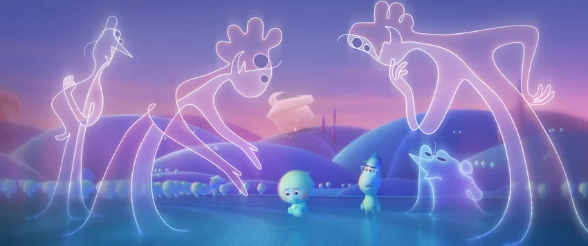
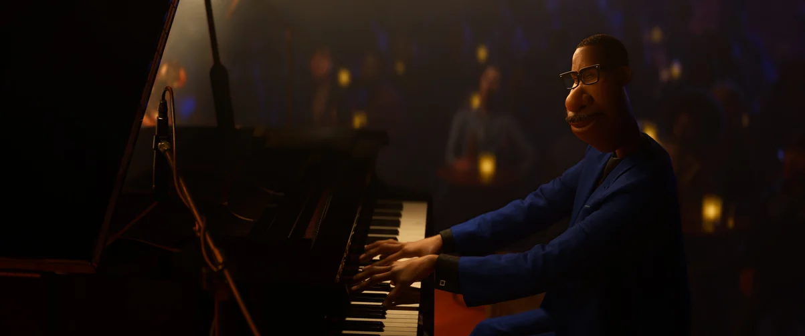
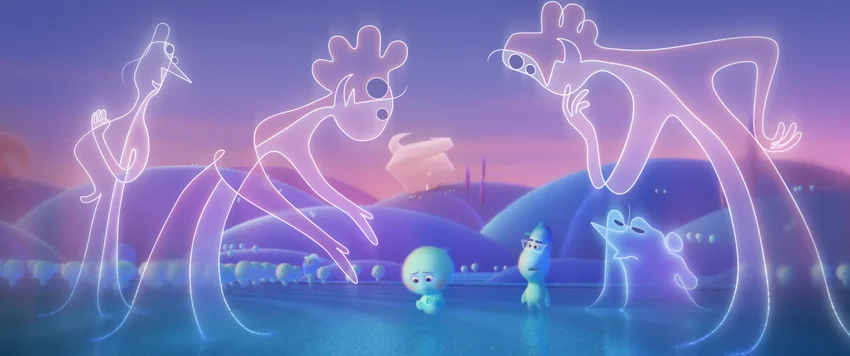
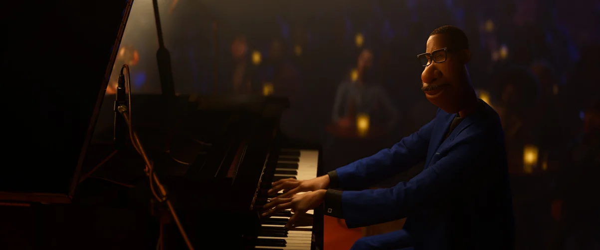

Мои любимые мультфильмы
Головоломка 2
Краткое содержание мультфильма
Райли уже подросток, и штаб-квартира в её мозгу подвергается капитальному ремонту, чтобы дать место новым эмоциям. Радость, Грусть, Гнев, Страх и Отвращение никак не ожидали появления Тревожности, Зависти, Смущения и Скуки. Райли с двумя лучшими подругами отправляется в хоккейный лагерь, где у неё появляется шанс попасть в команду старшей школы, и Радость уверена, что лучше всех знает, что делать в данной ситуации. Так же считает и Тревожность.
Кадры из фильма
О мультфильме
| Год | 2024 |
| Страна | США |
| Жанр | мультфильм, комедия, семейный, фэнтези |
| Режиссер | Келси Манн |
Хранители снов
Краткое содержание мультфильма
Когда злой дух Кромешник посягает на самое дорогое – детские мечты, Северянин, Ледяной Джек, Кролик, Зубная Фея и Песочный Человек впервые объединяются, чтобы создать команду Хранителей снов...
Кадры из фильма
О мультфильме
| Год | 2012 |
| Страна | США, Индия |
| Жанр | мультфильм, фантастика, фэнтези, боевик, драма, комедия, приключения, семейный |
| Режиссер | Питер Рэмзи |
Душа
Краткое содержание мультфильма
Уже немолодой школьный учитель музыки Джо Гарднер всю жизнь мечтал выступать на сцене в составе джазового ансамбля. Однажды он успешно проходит прослушивание у легендарной саксофонистки и, возвращаясь домой вне себя от счастья, падает в люк и умирает. Теперь у Джо одна дорога — в Великий После, но он сбегает с идущего в вечность эскалатора и случайно попадает в Великий До. Тут новенькие души обретают себя, и у будущих людей зарождаются увлечения, мечты и интересы. Джо становится наставником упрямой души 22, которая уже много веков не может найти свою искру и отправиться на Землю.
Кадры из фильма
 



О мультфильме
| Год | 2020 |
| Страна | США |
| Жанр | мультфильм, фэнтези, комедия, приключения, семейный, музыка |
| Режиссер | Пит Доктер, Кемп Пауэрс |